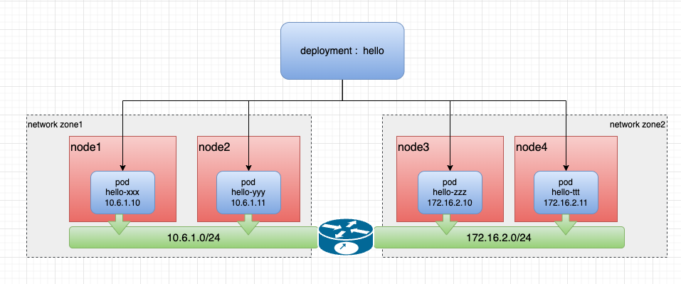
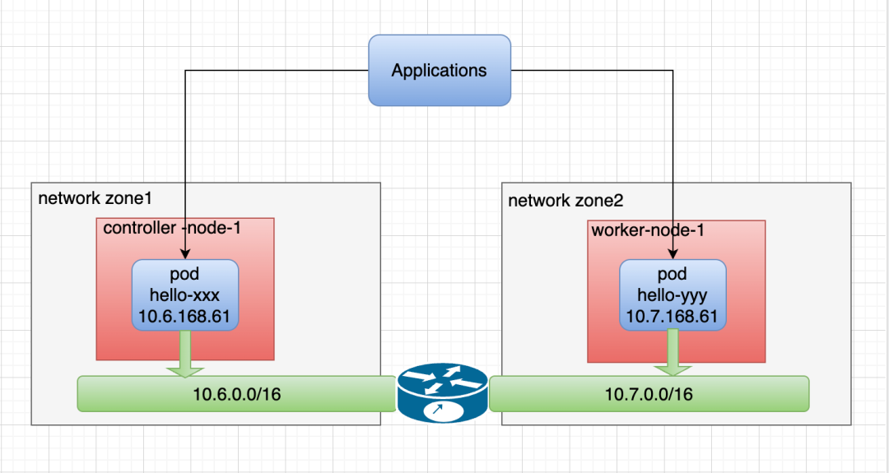

基于跨越网络区域的 IP 分配
简体中文 | English
介绍
随着数据中心私有云的不断普及，Underlay 网络作为数据中心网络架构的重要组成部分，已经被广泛应用于数据中心的网络架构中，以提供更高效的网络传输和更好的网络拓扑管理能力。由于具有低延迟、可靠、安全等特性，Underlay 在下列场景中得到广泛的应用：
-
延时敏感的应用：某些特定行业或应用（如金融交易、实时视频传输等）对网络延迟非常敏感。在这种情况下，Underlay 网络可以提供更低的延迟，通过直接控制物理和链路层的连接来减少数据传输的时间。这种低延迟的特性使得 Underlay 网络成为满足这些应用需求的理想选择。
-
防火墙安全管控：在集群中，防火墙通常用于管理南北向通信，即集群内部和外部网络之间的通信。为了实现安全管控，防火墙需要对通信流量进行检查和过滤，并对出口通信进行限制。在这种情况下，通过 Underlay 网络的 IPAM 对应用固定出口 IP 地址，可以更好地管理和控制集群与外部网络之间的通信，提高网络的安全性。
在 Underlay 网络的集群，当它的节点分布在不同地区或数据中心，而一些节点的区域只能使用特定子网时，将对 IP 地址管理（IPAM）带来挑战，本文将介绍一种能实现跨越网络区域的 IP 分配的完整的 Underlay 网络解决方案。

项目功能
Spiderpool 提供了节点拓扑的功能，能够帮助解决跨越网络区域的 IP 分配问题，它的实现原理如下。
- 一个集群，但集群的节点分布在不同地区或数据中心，一些节点的区域只能使用子网 10.6.1.0/24，一些节点的区域只能使用子网 172.16.2.0/24。
在上诉的场景下，当一个应用跨子网部署副本时，要求 IPAM 能够在不同的节点上，为同一个应用下的不同 Pod 分配出与子网匹配的 IP 地址，Spiderpool 的 CR：SpiderIPPool 提供了 nodeName 字段，实现 IP 池与节点之间的亲和性，让 Pod 被调度到某一节点时，能从节点所在的 Underlay 子网中获得 IP 地址，实现节点拓扑的功能，
实施要求
- 已安装 Helm。
步骤
跨越网络区域的集群
准备一套跨越网络区域的集群，如节点 1 使用 10.6.0.0/16，节点 2 使用 10.7.0.0/16 子网，以下是所使用的集群信息以及网络拓扑图：
~# kubectl get nodes -owide
NAME STATUS ROLES AGE VERSION INTERNAL-IP EXTERNAL-IP
controller-node-1 Ready control-plane 1h v1.25.3 10.6.168.71 <none>
worker-node-1 Ready <none> 1h v1.25.3 10.7.168.73 <none>

安装 Spiderpool
- 通过 helm 安装 Spiderpool。
helm repo add spiderpool https://spidernet-io.github.io/spiderpool
helm repo update spiderpool
helm install spiderpool spiderpool/spiderpool --namespace kube-system --set multus.multusCNI.defaultCniCRName="macvlan-conf"
如果您使用的是中国大陆的云厂商服务器，可以指定参数
--set global.imageRegistryOverride=ghcr.m.daocloud.io，以帮助您更快的拉取镜像。通过
multus.multusCNI.defaultCniCRName指定集群的 Multus clusterNetwork，clusterNetwork 是 Multus 插件的一个特定字段，用于指定 Pod 的默认网络接口。
- 检查安装完成
~# kubectll get po -n kube-sysem | grep spiderpool
NAME READY STATUS RESTARTS AGE
spiderpool-agent-7hhkz 1/1 Running 0 13m
spiderpool-agent-kxf27 1/1 Running 0 13m
spiderpool-controller-76798dbb68-xnktr 1/1 Running 0 13m
spiderpool-init 0/1 Completed 0 13m
spiderpool-multus-7vkm2 1/1 Running 0 13m
spiderpool-multus-rwzjn 1/1 Running 0 13m
安装 CNI 配置
Spiderpool 为简化书写 JSON 格式的 Multus CNI 配置，它提供了 SpiderMultusConfig CR 来自动管理 Multus NetworkAttachmentDefinition CR。如下是创建 IPvlan SpiderMultusConfig 配置的示例：
- master：在此示例用接口
eth0作为 master 的参数，此参数应与集群跨越网络区的节点上的接口名称匹配。
MACVLAN_MASTER_INTERFACE="eth0"
MACVLAN_MULTUS_NAME="macvlan-conf"
cat <<EOF | kubectl apply -f -
apiVersion: spiderpool.spidernet.io/v2beta1
kind: SpiderMultusConfig
metadata:
name: ${MACVLAN_MULTUS_NAME}
namespace: kube-system
spec:
cniType: macvlan
coordinator:
mode: underlay
tunePodRoutes: true
podCIDRType: cluster
enableCoordinator: true
macvlan:
master:
- ${MACVLAN_MASTER_INTERFACE}
在本文示例中，使用如上配置，创建如下的两个 Macvlan SpiderMultusConfig，将基于它自动生成的 Multus NetworkAttachmentDefinition CR，它对应了宿主机的 eth0 网卡。
~# ~# kubectl get spidermultusconfigs.spiderpool.spidernet.io -n kube-system
NAME AGE
macvlan-conf 10m
~# kubectl get network-attachment-definitions.k8s.cni.cncf.io -n kube-system
NAME AGE
macvlan-conf 10m
创建 IPPools
Spiderpool 的 CRD：SpiderIPPool 提供了 nodeName 字段，当 nodeName 不为空时，当 Pod 在某个节点上启动，尝试从 SpiderIPPool 分配 IP 时，若 Pod 所在节点符合该 nodeName 设置，则能从该 SpiderIPPool 中成功分配出 IP，否则无法从该 SpiderIPPool 中分配出 IP。当 nodeName 为空时，Spiderpool 对 Pod 不实施任何分配限制。
依据如上所述，使用如下的 Yaml，创建 2 个 SpiderIPPool，它们将为不同节点上的 Pod 提供 IP 地址。
~# cat <<EOF | kubectl apply -f -
apiVersion: spiderpool.spidernet.io/v2beta1
kind: SpiderIPPool
metadata:
name: test-ippool-6
spec:
subnet: 10.6.0.0/16
ips:
- 10.6.168.60-10.6.168.69
gateway: 10.6.0.1
nodeName:
- controller-node-1
---
apiVersion: spiderpool.spidernet.io/v2beta1
kind: SpiderIPPool
metadata:
name: test-ippool-7
spec:
subnet: 10.7.0.0/16
ips:
- 10.7.168.60-10.7.168.69
gateway: 10.7.0.1
nodeName:
- worker-node-1
EOF
创建应用
以下的示例 Yaml 会创建一个 daemonSet 应用，其中：
-
ipam.spidernet.io/ippool：用于指定 Spiderpool 的 IP 池，可以设置多个 IP 池用作备选池，Spiderpool 会按照 "IP 池数组" 中元素的顺序依次尝试分配 IP 地址，在节点跨网络区域的场景分配 IP 时，如果应用副本被调度到的节点，符合第一个 IP 池的 IPPool.spec.nodeAffinity 注解， Pod 会从该池中获得 IP 分配，如果不满足，Spiderpool 会尝试从备选池中选择 IP 池继续为 Pod 分配 IP ，直到所有备选池全部筛选失败。可以通过备选池 了解更多用法。
-
v1.multus-cni.io/default-network：用于指定 Multus 的 NetworkAttachmentDefinition 配置，会为应用创建一张默认网卡。
~# cat <<EOF | kubectl apply -f -
apiVersion: apps/v1
kind: DaemonSet
metadata:
name: test-app
spec:
selector:
matchLabels:
app: test-app
template:
metadata:
annotations:
ipam.spidernet.io/ippool: |-
{
"ipv4": ["test-ippool-6", "test-ippool-7"]
}
labels:
app: test-app
spec:
containers:
- name: test-app
image: nginx
imagePullPolicy: IfNotPresent
ports:
- name: http
containerPort: 80
protocol: TCP
EOF
完成创建后，可以发现 Pod 的 IP 属于 Pod 所在节点的子网内，所对应的 IP 池为应用的不同副本分配了 IP 地址。
~# kubectl get po -l app=test-app -o wide
NAME READY STATUS RESTARTS AGE IP NODE NOMINATED NODE READINESS GATES
test-app-j9ftl 1/1 Running 0 45s 10.6.168.65 controller-node-1 <none> <none>
test-app-nkq5h 1/1 Running 0 45s 10.7.168.61 worker-node-1 <none> <none>
~# kubectl get spiderippool
NAME VERSION SUBNET ALLOCATED-IP-COUNT TOTAL-IP-COUNT DEFAULT DISABLE
test-ippool-6 4 10.6.0.0/16 1 10 false false
test-ippool-7 4 10.7.0.0/16 1 10 false false
跨网络区域的 Pod 与 Pod 之间的通讯情况
~# kubectl exec -ti test-app-j9ftl -- ping 10.7.168.61 -c 2
PING 10.7.168.61 (10.7.168.61) 56(84) bytes of data.
64 bytes from 10.7.168.61: icmp_seq=1 ttl=63 time=1.06 ms
64 bytes from 10.7.168.61: icmp_seq=2 ttl=63 time=0.515 ms
--- 10.7.168.61 ping statistics ---
2 packets transmitted, 2 received, 0% packet loss, time 1002ms
rtt min/avg/max/mdev = 0.515/0.789/1.063/0.274 ms
总结
不同网络区域的 Pod 能够正常通信，Spiderpool 可以很好的实现基于跨越网络区域的 IP 分配需求。